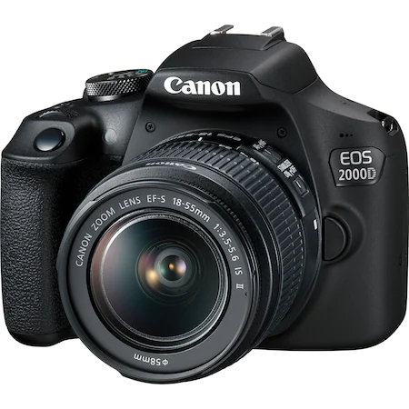
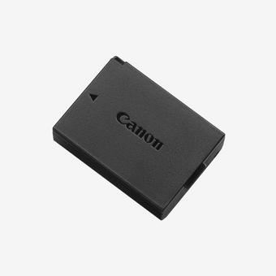
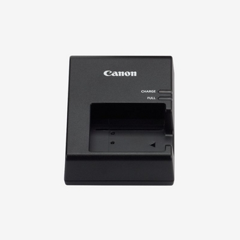
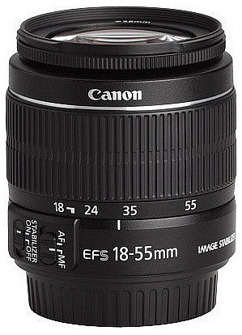
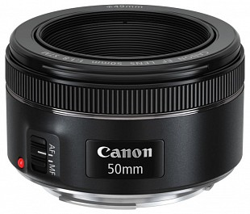
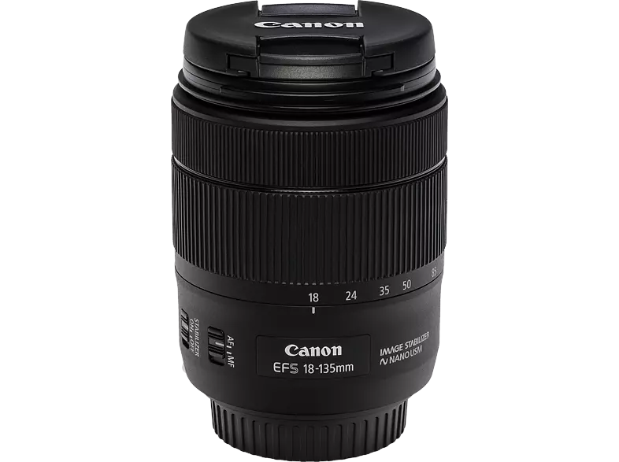
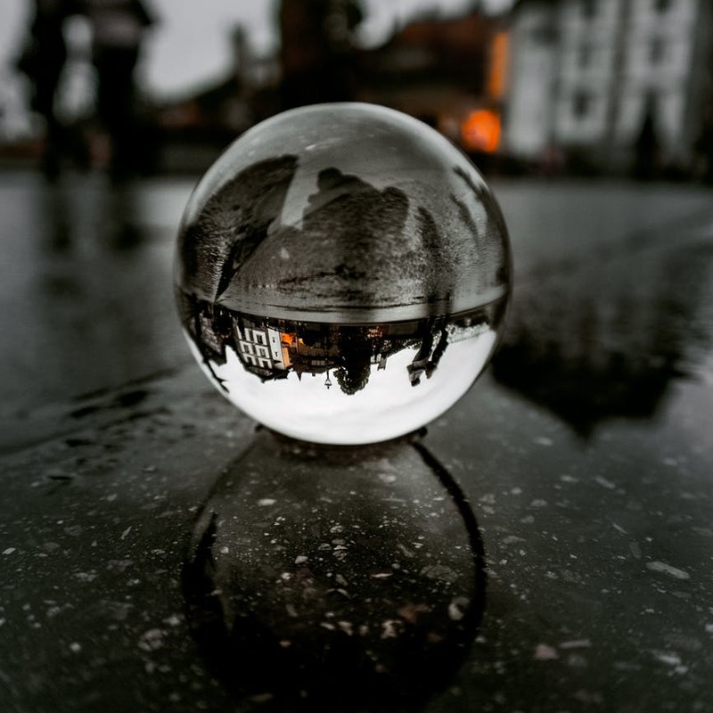
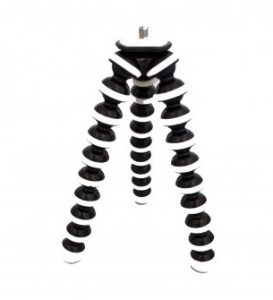

Ezen a helyen tekintheted meg azokat az eszközöket, amikre szükségem volt ahhoz, hogy az előbb látottakat eléd vethessem.
Lásd a kütyüimet:

Canon EOS 2000D
A fényképezőgép cserélhető objektíves. Részletgazdag, DSLR-minőségű képek, Full HD minőségű videók készytésére alkalmas.

Tartozékai
Akkumulátor
Canon LP-E10

Tartozékai
Akkumulátor TÖLTŐ
Canon LC-E10E

Canon EF-S 18-55mm f/3.5-5.6 IS STM
A 18-55mm-es zoomtartomnány lehetővé teszi a tájképek, portrék és különféle események dokumentálását is, így jó választás mindennapi használatra.

Canon EF 50mm F1.8 STM
A rekesznyílása képessé tesz a téma éles fókuszban tartására és a háttér elmosására. Kompakt objektív, vagyis nem lehet vele zoomolni

Canon EF-S 18-135mm f/3.5-5.6 IS USM
Sok téma fényképezésére alkalmas. A 18–135 mm-es zoomtartományt biztosít számunkra.

Fotós üveggömb
Az üveggömbök a fénytörés jelenségének felhasználására használhatóak.

JOBY GorillaPod SLR-Zoom
Az állvány 3 lábú állvány. Kamerák, telefonok tartására. A rugalmas, hajlítható lábak segítségével bárhol rögzíthető.